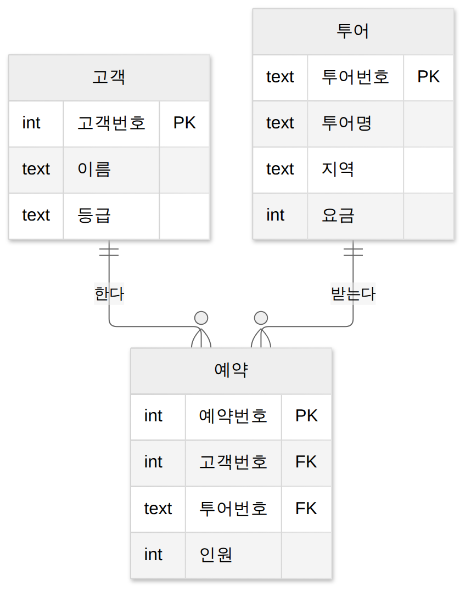

D048 · 길벗투어 예약 한 건을 따라가며 꿰는 한 주 — E-R · 릴레이션 · 키 · 무결성 · 관계대수 · 관계해석 · 스키마
1부 (약 18분)
2부 (약 25분)
B3 주간 종합 일요일이에요. 이번 주(D043~D047)는 관계 데이터 모델 · 관계대수 · 관계해석 · 데이터 모델 개념 · E-R 모델을 차례로 지나왔어요. 한 주 동안 풋살 선수 명단, 등산 출석부, 푸드트럭 주문까지 온갖 사례를 거쳤지만, 시험장에서 문제를 내는 사람은 풋살도 등산도 몰라요. 그가 아는 건 “차수가 열이었나 행이었나”뿐이에요. 그래서 오늘은 새 내용 없이 여행사 길벗투어의 예약 한 건을 따라가며 이번 주 개념을 처음부터 끝까지 한 줄로 다시 꿰어요. 이 묶음은 릴레이션 구조 · 키 · E-R이 최근 20회 시험에 20회 모두, 무결성 · 관계대수가 19회 나온 2과목의 심장부예요.
- 한 사례의 E-R 그림을 릴레이션으로 옮겨 읽고, 튜플 · 속성 · 도메인 · 차수 · 카디널리티를 틀리지 않고 센다
- 슈퍼키 · 후보키 · 기본키 · 대체키 · 외래키를 유일성 · 최소성 · 참조 질문으로 가르고, 개체 · 참조 · 도메인 무결성이 막는 위반을 짝짓는다
- σ · π · ⋈ · ÷ 결과를 손으로 구하고, 순수 관계 연산자와 일반 집합 연산, 절차적(관계대수)과 비절차적(관계해석)을 구별한다
- 외부 · 개념 · 내부 스키마와 논리적 · 물리적 독립성을 짝짓고, E-R 그림이 설계 5단계 중 어디의 결과물인지 말한다
- E-R 표기 기호를 읽어 ‘속성 = 오각형’ 같은 틀린 연결을 걸러내고, 지난 오답 짝과 보충 페이지(S04 · S05) 핵심을 다시 가른다
정처기 D045:로 따로 답장해 주세요.0. 한 주를 한 장에 — 오늘의 사례와 지도
이번 주 다섯 장은 사실 한 이야기의 다른 장면이었어요. 누군가 “고객이 투어를 예약한다”고 말하면, 설계자는 그걸 그림(E-R)으로 그려 합의하고, 그림을 표(릴레이션)로 옮기고, 표의 행을 구별할 이름표(키)와 지켜야 할 규칙(무결성)을 정하고, 마지막으로 표에서 원하는 답을 꺼내는 말(관계대수 · 관계해석)을 써요. 일곱 날의 내용이 지도 한 장에 붙어요. 문제를 읽다 길을 잃으면 “지금 그림 단계인가, 표 단계인가, 질의 단계인가”부터 물어보세요.
오늘 등장인물은 고객 넷(가온 · 나래 골드, 다솜 · 라온 실버), 투어 셋(T1 제주 올레 3일, T2 부산 먹방 2일, T3 강릉 해변 2일), 예약 여섯 건이에요. 가온은 T1 · T2를, 나래는 T1 · T2 · T3를 모두, 다솜은 T1만 예약했고 라온은 가입만 하고 예약이 없어요. D047의 길벗투어와 비슷하지만, 오늘은 디비전이 의미 있도록 세 투어를 다 예약한 사람(나래)과 예약이 하나도 없는 사람(라온)을 일부러 넣었어요. 이 두 사람이 오늘 문제의 함정을 거의 다 만들어요.
1. 장면 1 — 한 장 그림으로 합의한다 (E-R) 기출 14회
E-R 모델과 세 재료
정의: E-R 모델(개체-관계 모델)은 현실의 데이터를 개체 · 관계 · 속성으로 표현하는 개념적 데이터 모델이에요. 1976년 피터 첸(P. Chen)이 제안했고, 이 모델을 기호로 그린 그림이 E-R 다이어그램이에요. 어떤 DBMS로 만들지 정하기 전, 업무 담당자와 설계자가 “우리 업무에 무엇이 있고 어떻게 얽혀 있나”를 합의하려고 그리는 그림이라 특정 DBMS에 독립적이에요. 그래서 E-R 모델 개념을 묻는 문제의 세 기둥은 ‘첸이 제안 · 개념적 설계 · DBMS 독립’이에요.
세 재료는 이렇게 갈라요. 개체(Entity)는 따로 존재하며 여러 건 관리해야 하는 대상으로, 문장의 명사(고객 · 투어)예요. 관계(Relationship)는 개체 사이의 의미 있는 연관으로, 문장의 동사(예약한다)예요. 속성(Attribute)은 개체나 관계를 설명하는 값(이름 · 등급 · 요금)이에요. 개체 · 관계 · 속성 세 개가 E-R의 기본 요소 전부이고, ‘연산’이나 ‘도메인’은 여기 끼지 않아요. 그림 2에서 ‘인원’이 마름모에 매달린 이유는, 인원이 가온 한 사람이나 T1 하나로 정해지지 않고 “가온이 T1을 예약한 그 한 건”에만 있는 값이기 때문이에요.
E-R 표기 기호와 대응 수
정의: E-R 표기 기호는 첸 표기법에서 정한 약속으로, 개체는 사각형, 관계는 마름모, 속성은 타원, 이들을 잇는 것은 선이에요. 키 속성은 이름에 밑줄을 긋고, 값이 여럿일 수 있는 다중값 속성은 이중 타원으로 그려요. 속성 종류에는 그 밖에 복합 속성(주소 → 시 · 상세)과 유도 속성(생일에서 계산되는 나이, 점선 타원)도 있는데, 기출은 다중값 = 이중 타원 하나만 물었어요. 기호 문제의 정답은 거의 늘 가짜 짝이에요 — 속성을 오각형이나 삼각형으로, 연결선을 삼각형으로 그린다는 선지가 틀린 쪽이에요.
선 위의 M과 N은 관계 카디널리티, 즉 한쪽 인스턴스 하나가 상대 몇 개와 이어질 수 있는지를 적은 거예요. 1 : 1 · 1 : N · M : N 세 가지가 있고, 판단은 문장을 양방향으로 두 번 읽어서 해요. “고객 한 명이 투어 몇 개?” 여럿. “투어 하나에 고객 몇 명?” 여럿. 그러니 고객 : 투어는 M : N이에요. 이 M : N은 표로 내려갈 때 가운데 표 하나(예약)를 낳는데, 그 변환 규칙은 다음 주 D049에서 정식으로 배워요.
2. 장면 2 — 표로 내려온다 (릴레이션 구조) 기출 19회
릴레이션 · 튜플 · 속성 · 도메인
정의: 관계 데이터 모델에서 데이터는 모두 릴레이션(Relation), 즉 2차원 표 하나하나로 저장돼요. 그림 2의 사각형 고객 · 투어와 마름모 예약이 그림 3의 표 세 개가 됐어요. 표의 한 행이 튜플(Tuple)로, 고객 한 명(“2, 나래, 골드”) 같은 실제 한 건이에요. 표의 한 열이 속성(Attribute)으로, 데이터를 이루는 가장 작은 논리적 단위이자 E-R의 타원이 옮겨 온 자리예요. 도메인(Domain)은 한 속성이 가질 수 있는 원자값들의 집합이에요. 등급의 도메인은 {골드, 실버}이고, 요금의 도메인은 0 이상의 정수예요. 도메인 밖의 값(‘플래티넘’)은 들어올 수 없어요 — 장면 4에서 DB가 그걸 직접 거부하는 걸 볼 거예요.
차수와 카디널리티
정의: 차수(Degree)는 한 릴레이션의 속성 개수(열 수), 카디널리티(Cardinality)는 튜플 개수(행 수)예요. 예약 표는 속성이 예약번호 · 고객번호 · 투어번호 · 인원 넷이니 차수 4, 튜플이 여섯이니 카디널리티 6이에요. 차수는 열이라고 외우면 반은 맞고, 카디널리티는 행이라고 외우면 나머지 반이 맞아요. 문제는 둘을 한 번에 외우는 순간 시험장에서 서로 바꿔 쓴다는 거예요. 억지 단서를 만드는 대신 표를 눈앞에 그리고 머리줄부터 센다고 기억하세요 — 머리줄(속성 이름)을 세면 차수, 그 아래 값 줄을 세면 카디널리티예요.
장면 1의 관계 카디널리티(1 : N, M : N)와 이름이 같아서 헷갈리는데, 질문이 달라요. 관계 카디널리티는 “상대 개체 몇 개와 이어지나”, 릴레이션의 카디널리티는 “이 표에 행이 몇 개인가”예요. 릴레이션 구조 문제에서 숫자로 답하라고 하면 거의 늘 뒤쪽이에요.
| 예약번호 | 고객번호 | 투어번호 | 인원 |
|---|---|---|---|
| 1 | 1 | T1 | 2 |
| 2 | 1 | T2 | 1 |
| 3 | 2 | T1 | 1 |
| 4 | 2 | T2 | 3 |
| 5 | 2 | T3 | 2 |
| 6 | 3 | T1 | 1 |
① 예약 릴레이션 한 장이에요. 숫자를 세기 전에 “열을 셀 차례인지, 행을 셀 차례인지”부터 정해요.
| ① | ② | ③ | ④ |
|---|---|---|---|
| 예약번호 | 고객번호 | 투어번호 | 인원 |
② 맨 위 머리줄의 속성 이름을 왼쪽부터 세요. 예약번호 · 고객번호 · 투어번호 · 인원 — 속성이 4개이니 차수 = 4예요. 차수는 스키마만 봐도 정해져요.
| 예약번호 | 고객번호 | 투어번호 | 인원 |
|---|---|---|---|
| 1 | 1 | T1 | 2 |
| 2 | 1 | T2 | 1 |
| 3 | 2 | T1 | 1 |
| 4 | 2 | T2 | 3 |
| 5 | 2 | T3 | 2 |
| 6 | 3 | T1 | 1 |
③ 이번엔 값이 든 행을 위에서부터 세요. 튜플이 6개이니 카디널리티 = 6이에요. 카디널리티는 실제 데이터(인스턴스)를 봐야 알아요.
| 예약번호 | 고객번호 | 투어번호 | 인원 |
|---|---|---|---|
| 1 | 1 | T1 | 2 |
| 2 | 1 | T2 | 1 |
| 3 | 2 | T1 | 1 |
| 4 | 2 | T2 | 3 |
| 5 | 2 | T3 | 2 |
| 6 | 3 | T1 | 1 |
④ 다솜이 예약 6번을 취소해 행 하나가 지워졌어요. 다시 세면 차수는 그대로 4, 카디널리티만 5가 돼요. 스키마는 그대로, 인스턴스만 시간에 따라 변한다는 말이 바로 이거예요.
릴레이션 스키마와 인스턴스, 그리고 릴레이션의 특징
정의: 릴레이션 스키마와 인스턴스는 표의 틀과 내용이에요. 스키마는 릴레이션 이름과 속성 이름들의 모음, 예컨대 예약(예약번호, 고객번호, 투어번호, 인원)이라는 구조이고 거의 바뀌지 않아요. 인스턴스는 어느 순간 그 틀에 들어 있는 튜플들의 집합, 즉 값이고 예약이 들어오고 취소될 때마다 바뀌어요. 그래서 차수는 스키마만 보면 정해지지만 카디널리티는 인스턴스를 봐야 알아요. 애니메이션 ④에서 행이 지워지자 카디널리티만 바뀐 게 그 차이예요.
릴레이션에는 일반 엑셀 표와 다른 특징이 네 가지 있어요. 첫째, 한 릴레이션 안의 튜플은 모두 서로 달라요(똑같은 행 두 개는 허용되지 않아요 — 그래서 키가 있어요). 둘째, 튜플 사이에 순서가 없어요. 가온을 맨 아래로 옮겨도 같은 릴레이션이에요. 셋째, 속성 사이에도 순서가 없어요. 열 순서를 바꿔도 의미는 같아요. 넷째, 속성 값은 원자값이라 한 칸에 “T1, T2”처럼 여러 값을 묶어 넣을 수 없어요. 여기에 하나 덧붙이면, 튜플은 삽입 · 삭제로 시간에 따라 변해요(이건 맞는 설명이에요).
결과는 6이에요. COUNT(*)는 행을 세니 카디널리티를 바로 주지만, 차수는 데이터가 아니라 표의 정의(스키마)에 있어요. 장면 4의 시스템 카탈로그 상자에서 그 정의를 직접 꺼내 볼 거예요.
3. 장면 3 — 이 행은 누구인가 (키) 기출 20회
유일성 · 최소성, 슈퍼키와 후보키
정의: 키(Key)는 릴레이션에서 튜플을 구별하거나 다른 릴레이션과 연결하는 데 쓰는 속성(또는 속성 묶음)이에요. 키를 가르는 질문은 두 개예요. 유일성은 “이 속성 값으로 모든 튜플을 서로 구별할 수 있나?”, 최소성은 “그중 속성 하나라도 빼면 구별이 안 되나(군더더기가 없나)?”예요. 유일성만 만족하면 슈퍼키(Super Key), 유일성과 최소성을 모두 만족하면 후보키(Candidate Key)예요. 슈퍼키는 짐에 이름표가 달렸는지만 보고, 후보키는 이름표가 꼭 필요한 만큼만 달렸는지까지 봐요. 짐마다 이름표를 다섯 장씩 붙이는 사람도 짐은 찾지만, 후보키 심사에서는 떨어져요.
예약 표로 해 볼게요. 길벗투어 규칙상 “한 고객은 같은 투어를 한 번만 예약”해요. 그러면 {예약번호}로도, {고객번호, 투어번호}로도 예약 한 건이 정해지고, 둘 다 속성 하나를 빼면 구별이 안 되니 후보키가 둘이에요. {예약번호, 인원}은 행을 구별하긴 하지만 인원을 빼도 여전히 구별되니 최소성이 없어 슈퍼키일 뿐이에요. 고객번호 하나는? 가온이 예약을 두 건 했으니 유일성부터 탈락이에요.
기본키 · 대체키 · 외래키
정의: 기본키(Primary Key)는 후보키 중 설계자가 대표로 고른 하나로, NULL이 될 수 없고 중복될 수 없어요. 예약 표는 {예약번호}를 기본키로 골랐어요. 대체키(Alternate Key)는 후보키 중 기본키로 뽑히지 못한 나머지 — 여기서는 {고객번호, 투어번호}예요. “슈퍼키 중 기본키를 뺀 것”이 아니라 후보키 중 기본키를 뺀 것이라는 점이 함정 포인트예요.
외래키(Foreign Key)는 한 릴레이션의 속성이 다른 릴레이션의 기본키를 참조하는 것이에요. 예약의 고객번호는 고객의 기본키를, 투어번호는 투어의 기본키를 가리켜요. 외래키는 두 표를 잇는 다리라서 E-R의 마름모(관계)가 표로 내려와 살아 있는 모습이기도 해요. 외래키는 한 릴레이션에 여러 개 있을 수 있고, 업무 규칙이 허용하면 NULL일 수도 있어요(오늘 seed는 예약에 고객이 반드시 있어야 해서 NOT NULL로 막았어요). 다만 NULL이 아니라면 그 값은 반드시 상대 표의 기본키 값 중 하나여야 해요 — 이게 장면 4의 참조 무결성이에요.
이 상자는 일부러 오류가 나요. 고객번호가 기본키라서 같은 값 1을 또 넣으면 DBMS가 “중복 키”라며 거부해요. 기본키의 유일성을 사람이 아니라 DBMS가 지켜 주는 거예요. 다음 장면에서 이런 규칙에 붙은 이름을 정리해요.
4. 장면 4 — 규칙을 DB가 지키게 한다 (무결성 · 시스템 카탈로그) 기출 19회
개체 · 참조 · 도메인 무결성
정의: 무결성(Integrity)은 DB에 저장된 값이 현실과 규칙에 맞게 정확한 상태를 유지하는 성질이고, 무결성 제약 조건은 그걸 깨는 삽입 · 수정 · 삭제를 DBMS가 거부하게 하는 규칙이에요. 파티 입구에 비유하면 셋이 이렇게 달라요. 개체 무결성은 “이름표 없는 손님은 못 들어옴” — 기본키를 이루는 속성은 NULL일 수 없고 중복될 수 없어요. 참조 무결성은 “초대 명단에 없는 사람의 동반자로는 못 들어옴” — 외래키 값은 NULL이거나 참조하는 릴레이션의 기본키 값 중 하나여야 해요. 도메인 무결성은 드레스 코드 — 속성 값은 그 속성에 정해진 도메인(자료형 · 범위 · 허용 값) 안에 있어야 해요.
참조 무결성은 넣을 때만이 아니라 지울 때도 일해요. 나래를 고객 표에서 지우면 나래의 예약 세 건이 가리킬 곳이 없어지니, DBMS는 삭제를 거부(RESTRICT)하거나 예약까지 함께 지우거나(CASCADE) 외래키를 NULL로 바꾸는(SET NULL) 식으로 대응해요. 외래키가 바뀌면 참조하는 쪽도 맞춰야 한다는 기출 선지가 바로 이 얘기예요.
사용자 정의 무결성 · 키 무결성 · 릴레이션 무결성 규정, 그리고 가짜 무결성 이름
정의: 세 가지 말고도 정식 이름이 몇 개 더 있어요. 사용자 정의 무결성은 업무 규칙을 직접 정한 것(“인원은 1명 이상 10명 이하”), 키 무결성은 한 릴레이션에 같은 키 값을 가진 튜플이 둘 있을 수 없다는 규칙이에요. 릴레이션 무결성 규정은 이런 무결성 규칙들을 한데 정의해 둔 규정을 가리키는 말이에요. 반대로 시험에는 그럴듯한 가짜 무결성 이름이 섞여요. “정보 무결성”, “고유 무결성”, “보안 무결성”, “널 제약성”, “키 제약성” 같은 말은 정식 분류가 아니라 오답 선지를 위해 만든 이름이에요. 선지에서 처음 보는 무결성 이름이 나오면 일단 의심하세요.
이 상자도 일부러 오류가 나요. 예약.고객번호가 고객(고객번호)을 참조하는 외래키라서 없는 99를 넣으면 “외래키 제약 위반”이에요 — 참조 무결성이에요. seed의 등급 열에는 CHECK (등급 IN ('골드','실버'))도 걸려 있으니, 그림 5의 세 번째 INSERT(‘플래티넘’)도 같은 방식으로 거부돼요. 그건 도메인 무결성이에요.
시스템 카탈로그
정의: 시스템 카탈로그(System Catalog)는 DBMS가 스스로 만들고 관리하는, DB 안의 모든 객체에 대한 정의 정보(메타데이터)를 담은 시스템 데이터베이스예요. 어떤 표가 있고, 열 이름과 자료형은 무엇이고, 기본키와 외래키 · 제약 조건은 무엇인지가 다 여기에 있어요. 데이터 사전(Data Dictionary)이라고도 불러요. 위에서 DBMS가 중복 키와 없는 고객번호를 거부할 수 있었던 것도, 그 규칙이 카탈로그에 적혀 있기 때문이에요. 카탈로그도 표 형태라 사용자가 SQL로 조회할 수는 있지만, INSERT · UPDATE로 직접 갱신할 수는 없어요. CREATE TABLE이나 ALTER TABLE 같은 DDL을 실행하면 DBMS가 알아서 카탈로그를 고쳐요.
결과는 4행 — 예약번호 · 고객번호 · 투어번호 · 인원과 각 자료형이에요. 행 수가 곧 예약 표의 차수예요. 장면 2에서 COUNT(*)로는 셀 수 없던 차수를 카탈로그가 알려 줘요. PostgreSQL은 표준 이름인 information_schema로 카탈로그를 보여 주고, 이 표를 우리가 고칠 수는 없어요.
5. 장면 5 — 원하는 행만 꺼내 온다 (관계대수) 기출 18회
관계대수와 두 부류의 연산자
정의: 관계대수(Relational Algebra)는 릴레이션을 입력받아 연산자를 적용하고 결과로 또 릴레이션을 내놓는 질의 언어예요. “먼저 이걸 자르고, 그다음 이걸 붙여라”처럼 원하는 결과를 얻는 처리 순서를 명시하므로 절차적 언어예요. 레시피에 비유하면 딱 맞아요 — 레시피에는 “양파를 먼저 볶고, 그다음 고기”라는 순서가 있죠. 관계대수 개념(절차적 언어)을 묻는 문제가 18회 나왔는데, 핵심은 늘 ‘절차적’과 ‘두 부류’예요.
연산자는 두 부류예요. 순수 관계 연산자는 릴레이션을 위해 새로 만든 연산으로, 넷이에요. Select(σ)는 조건을 만족하는 튜플만 고르는 연산으로 표를 가로로 잘라요(수평적 부분집합). Project(π)는 지정한 속성만 남기는 연산으로 표를 세로로 잘라요(수직적 부분집합), 결과에 생긴 중복 튜플은 하나로 합쳐요. Join(⋈)은 공통 속성 값이 같은 튜플끼리 두 릴레이션을 이어 붙여요. Division(÷)은 나누는 릴레이션의 값을 모두 가진 튜플만 남겨요. 반면 일반 집합 연산은 수학의 집합 연산을 표에 가져온 것으로, 합집합(∪) · 교집합(∩) · 차집합(−)과 카티션 프로덕트(×)예요. 합 · 교 · 차는 두 릴레이션의 속성 구성이 같아야(합병 가능) 쓸 수 있어요.
카티션 프로덕트 계산과 순수 관계 연산자 구분
정의: 카티션 프로덕트(Cartesian Product, ×, 교차곱)는 두 릴레이션의 튜플을 가능한 모든 쌍으로 이어 붙이는 연산이에요. 카티션 프로덕트 계산 규칙은 하나예요 — 결과의 차수는 두 차수의 합, 카디널리티는 두 카디널리티의 곱. 고객(차수 3, 카디널리티 4) × 투어(차수 4, 카디널리티 3)는 차수 3 + 4 = 7, 카디널리티 4 × 3 = 12예요. 예약 여부와 상관없이 고객 넷과 투어 셋의 모든 짝이 나오니까요. 열은 옆으로 이어 붙으니 더하고, 행은 짝을 지으니 곱한다고 이해하면 외울 필요가 없어요.
순수 관계 연산자 구분 문제에서 가장 많이 틀리는 지점이 바로 이 카티션 프로덕트예요. 이름에 ‘곱’이 들어가고 조인과 비슷해 보여서 순수 관계 연산자로 착각하지만, 일반 집합 연산 쪽이에요. 조인은 사실 “카티션 곱을 한 뒤 σ로 조건에 맞는 쌍만 남긴 것”이라, 카티션 곱이 조인의 재료일 뿐 같은 부류는 아니에요.
결과는 12예요. SELECT *로 바꾸면 열이 7개(고객 3 + 투어 4)인 것도 확인할 수 있어요.
σ · π · ⋈ 손풀이와 관계대수식 ↔ SQL 변환
관계대수식은 괄호 안쪽부터 계산해요. π 이름(σ 투어번호='T1'(예약 ⋈ 고객))이라는 한 줄을 애니메이션으로 풀면, 조인 → 셀렉트 → 프로젝트 순서로 표가 6행 → 3행 → 3행 1열로 줄어들어요. 관계대수식 ↔ SQL 변환은 짝만 알면 돼요. σ 조건은 WHERE, π 속성은 SELECT 목록, ⋈은 JOIN … ON(또는 FROM 두 표 + WHERE 같은 값), ×는 CROSS JOIN, ∪ · ∩ · −는 UNION · INTERSECT · EXCEPT예요. 예를 들어 π 이름(σ 등급='골드'(고객))은 SELECT 이름 FROM 고객 WHERE 등급 = '골드'예요.
| 예약번호 | 이름 | 투어번호 |
|---|---|---|
| 1 | 가온 | T1 |
| 2 | 가온 | T2 |
| 3 | 나래 | T1 |
| 4 | 나래 | T2 |
| 5 | 나래 | T3 |
| 6 | 다솜 | T1 |
① 괄호 가장 안쪽 예약 ⋈ 고객부터. 고객번호가 같은 행끼리 이어 붙이니 예약 6행마다 고객 이름이 붙어요(필요한 열만 보였어요). 라온은 예약이 없어 짝이 없으니 나오지 않아요.
| 예약번호 | 이름 | 투어번호 |
|---|---|---|
| 1 | 가온 | T1 |
| 2 | 가온 | T2 |
| 3 | 나래 | T1 |
| 4 | 나래 | T2 |
| 5 | 나래 | T3 |
| 6 | 다솜 | T1 |
② 그 결과에 σ 투어번호 = T1. 조건에 맞는 행만 남기니 가로로 잘려 3행이 돼요. σ는 열은 그대로 두고 행만 줄여요.
| 이름 |
|---|
| 가온 |
| 나래 |
| 다솜 |
③ 마지막으로 π 이름. 이름 열만 세로로 잘라 남겨요. 3행 1열 — 제주 올레를 예약한 사람은 가온 · 나래 · 다솜이에요.
| 이름 |
|---|
| 가온 |
| 나래 |
| 다솜 |
④ π는 결과에서 같은 행을 하나로 합쳐요(릴레이션에는 중복 튜플이 없으니까요). 이번엔 겹치는 이름이 없어 그대로 3행이에요. 만약 π 등급이었다면 골드 · 골드 · 실버가 골드 · 실버 2행이 돼요. 이렇게 안쪽부터 순서대로 계산하는 성질 때문에 관계대수를 절차적이라고 해요.
첫 상자는 가온 · 나래 2행 1열이에요. 둘째 상자는 6행 — 가온(부산 먹방 · 제주 올레), 나래(강릉 해변 · 부산 먹방 · 제주 올레), 다솜(제주 올레)이에요. 조인은 짝이 있는 튜플만 이어 붙이니, 예약이 없는 라온은 나오지 않아요.
Division(÷) 손풀이
정의: 디비전(÷)은 릴레이션 R(X, Y)을 S(Y)로 나눌 때, S에 있는 Y 값을 전부 가진 X만 남기는 연산이에요. “모든 투어를 예약한 고객”처럼 ‘모든’이 들어간 질문의 대수 답이에요. 반 아이들 전원이 숙제를 냈는지 확인하는 일과 같아요 — 한 명이라도 빠지면 통과가 아니죠. 예약(고객번호, 투어번호) ÷ 투어(투어번호)를 하면, T1 · T2 · T3를 모두 가진 나래(2)만 남아요(그림 7). 나누는 쪽을 {T1, T2}로 줄이면 가온과 나래 둘이 남아요. 나누는 쪽이 작아질수록 통과하기 쉬워져요.
결과는 고객번호 2(나래) 하나예요. SQL에는 ÷가 없어서 “개수를 세어 비교”하거나, 다음 장면처럼 NOT EXISTS를 두 번 써서 표현해요. 더 많은 ÷ · 카티션 곱 손풀이는 D045에 있어요.
6. 장면 6 — 무엇을 원하는지만 적는다 (관계해석)
관계해석(비절차적 · 프레디킷 해석)
정의: 관계해석(Relational Calculus)은 수학의 프레디킷 해석(술어 논리)에 기반해, 얻고 싶은 결과가 무엇인지만 조건식으로 적는 질의 언어예요. 어떤 순서로 계산할지는 적지 않으니 비절차적이에요. 관계대수가 레시피라면 관계해석은 주문서예요 — 주문서에는 “매운 맛, 고기 많이”만 적고 볶는 순서는 주방(DBMS)이 정하죠. 관계해석은 코드(E. F. Codd)가 제안했고, 변수가 무엇을 가리키느냐에 따라 튜플 관계해석(변수가 튜플)과 도메인 관계해석(변수가 속성 값)으로 나뉘어요. 관계대수와 관계해석은 표현할 수 있는 질의의 범위가 같아서(관계적으로 완전), 대수로 쓸 수 있는 건 해석으로도 쓸 수 있어요. SQL은 이 해석 쪽 생각에 더 가까운 언어예요.
관계해석 기호와 같은 질문 세 모양
정의: 관계해석 기호 중 시험에 나오는 것은 정량자 둘과 소속 기호예요. ∀(전칭 정량자, for all)는 “모든 것에 대해”, ∃(존재 정량자, there exists)는 “조건을 만족하는 것이 하나라도 있다”, ∈는 “어떤 릴레이션에 속한다”예요. 그 밖에 ∧(그리고) · ∨(또는) · ¬(부정)으로 조건을 묶어요. “모든 투어를 예약한 고객”은 해석으로 “고객 c 중에서, 모든 투어 t에 대해(∀), c와 t를 잇는 예약 r이 존재하는(∃) c”라고 적어요. 장면 5의 ÷와 같은 질문을 순서 없이 조건만으로 쓴 거예요(그림 8).
SQL은 ∀를 바로 쓰는 문법이 없어서 “모든 투어를 예약했다”를 “예약하지 않은 투어가 하나도 없다”로 바꿔 써요. 논리로는 ∀ = ¬∃¬(아닌 것이 존재하지 않는다)예요. 그래서 NOT EXISTS가 두 번 들어가요. 바깥 NOT EXISTS가 “없다”, 안쪽 NOT EXISTS가 “예약하지 않은”을 맡아요.
결과는 나래 하나 — 장면 5의 ÷, HAVING 상자와 같은 답이에요. 같은 질문을 세 가지 말투로 물어도 답이 같다는 것이 “관계대수와 관계해석의 표현력은 같다”는 말을 눈으로 본 셈이에요. 해석식을 손으로 쓰고 읽는 연습은 D045에서 이어 가세요.
7. 장면 7 — 같은 DB를 세 눈으로 본다 (데이터 모델 · 스키마 · 설계 단계) 기출 13회
데이터 모델 구성 요소와 데이터 모델 종류
정의: 데이터 모델은 현실 세계를 DB에 표현하기 위한 개념적 도구로, 데이터 모델 구성 요소는 구조(개체와 개체 사이의 관계 — 오늘의 표와 키), 연산(Operation)(그 구조 위에서 데이터를 처리하는 방법 — 관계대수 · SQL), 제약조건(저장될 수 있는 값의 규칙 — 무결성) 셋이에요. 이번 주 장면 2 · 3이 구조, 장면 5가 연산, 장면 4가 제약조건이었던 셈이에요. 데이터 모델 종류로는 오늘 쓴 관계형(표) 말고도 부모-자식 트리로 저장하는 계층형, 그래프로 연결하는 네트워크형이 있어요(두 모델의 특징은 D049에서 이어서 봐요).
스키마 3단계와 데이터 독립성
정의: 스키마 3단계(외부 · 개념 · 내부)는 같은 DB를 보는 관점을 셋으로 나눈 구조예요. 외부 스키마(External Schema)는 사용자나 응용 프로그램 하나하나가 보는 DB의 일부분(서브 스키마, 사용자 뷰)이라 여러 개예요 — 영업팀 화면, 정산팀 화면, 고객 앱. 개념 스키마(Conceptual Schema)는 조직 전체 관점에서 DB 전체의 논리 구조를 하나로 정의한 것으로, 모든 표 · 관계 · 무결성 규칙 · 접근 권한이 여기 있어요. 내부 스키마(Internal Schema)는 물리적 저장 장치 관점에서 레코드 형식 · 인덱스 · 파일 배치를 정의한 것이에요. 외부 스키마는 손님이 보는 메뉴판, 개념 스키마는 주방 전체 레시피북, 내부 스키마는 창고 선반 배치예요.
세 단계로 나누는 이유가 데이터 독립성(논리적 · 물리적)이에요. 논리적 데이터 독립성은 개념 스키마가 바뀌어도(예약 표에 결제수단 열 추가) 외부 스키마와 응용 프로그램은 고치지 않아도 되는 성질이고, 뷰가 이걸 제공해요. 물리적 데이터 독립성은 내부 스키마가 바뀌어도(인덱스 추가, 디스크 교체) 개념 스키마와 응용 프로그램이 영향을 받지 않는 성질이에요. 메뉴판이 바뀌어도 선반은 그대로, 선반이 바뀌어도 메뉴판은 그대로 — 각 경계의 사상(매핑)만 고치면 돼요.
DBMS 필수 기능과 데이터베이스 특성
정의: 이 모든 걸 관리하는 소프트웨어가 DBMS이고, DBMS 필수 기능(정의 · 조작 · 제어)은 셋이에요. 정의 기능은 데이터의 구조와 제약을 정하는 것(CREATE TABLE, 오늘 seed), 조작 기능은 검색 · 삽입 · 수정 · 삭제(오늘 SELECT · INSERT 상자들), 제어 기능은 무결성 · 보안 · 권한 · 병행 수행을 지키는 것(오늘 거부된 INSERT들)이에요. 그리고 이렇게 관리되는 데이터베이스 특성으로 네 가지를 들어요 — 질의에 즉시 응답하는 실시간 접근, 삽입 · 삭제 · 갱신으로 늘 바뀌는 계속적 변화, 여러 사용자가 함께 쓰는 동시 공용, 주소가 아니라 값으로 찾는 내용 참조예요.
DB 설계 단계와 개념적 설계
정의: DB 설계 단계는 요구 분석 → 개념적 설계 → 논리적 설계 → 물리적 설계 → 구현의 다섯 단계예요. 이번 주 내용은 이 순서에 그대로 놓여요(그림 10). 개념적 설계는 요구 분석 결과를 특정 DBMS와 상관없이 E-R 다이어그램 같은 개념 스키마로 모델링하는 단계로, 사용자 뷰 통합과 트랜잭션 모델링도 여기서 해요. 논리적 설계는 목표 DBMS 종류(관계형)에 맞춰 릴레이션 스키마로 옮기고 정규화하는 단계(트랜잭션 인터페이스 설계 포함), 물리적 설계는 저장 레코드 양식 · 인덱스 · 접근 경로를 정하는 단계예요. 애니메이션은 예약 한 건이 다섯 단계를 지나며 모양을 바꾸는 과정이에요.
| 단계 | 이 단계의 모양 |
|---|---|
| 요구 분석 | “고객은 투어를 예약하고, 예약마다 인원을 적는다.” |
① 요구 분석. 영업팀 인터뷰에서 나온 문장이에요. 아직 그림도 표도 없어요.
| 단계 | 이 단계의 모양 |
|---|---|
| 개념 설계 | [고객] —M— <예약> —N— [투어], 예약에 (인원) |
② 개념 설계. 문장이 E-R 그림(그림 2)이 돼요. DBMS 종류와 상관없는 그림이에요.
| 단계 | 이 단계의 모양 |
|---|---|
| 논리 설계 | 예약(예약번호, 고객번호 FK, 투어번호 FK, 인원) |
③ 논리 설계. 관계형 DB로 가기로 정하고 그림을 릴레이션 스키마로 옮겨요. 키와 외래키가 여기서 생겨요(변환 규칙 전체는 D049).
| 단계 | 이 단계의 모양 |
|---|---|
| 물리 설계 | 예약.고객번호에 인덱스, 정수 4바이트, 파일 배치 |
④ 물리 설계. 자주 찾는 열에 인덱스를 두고 자료형 · 저장 방식을 정해요. 레코드 양식과 접근 경로가 이 단계의 일이에요.
| 단계 | 이 단계의 모양 |
|---|---|
| 구현 | CREATE TABLE 예약 (… REFERENCES 고객 …); |
⑤ 구현. 실제 DBMS에 DDL을 실행해요. 오늘 실행 상자들의 seed가 바로 이 단계의 결과물이에요.

8. 헷갈리는 짝 — 가르는 질문 표
첫 표는 이번 주(D043~D047) 짝, 둘째 표는 지난 오답과 보충 페이지(S04 · S05)의 짝이에요. 확인 문제 11~20번이 둘째 표에서 나와요. 문제를 풀다 막히면 짝을 떠올리고 그 줄의 질문 하나만 던져 보세요.
| 헷갈리는 짝 | 가르는 질문 | 예 → / 아니오 → |
|---|---|---|
| 차수 vs 카디널리티 | 머리줄(속성 이름)을 세나? | 차수(열 수) / 카디널리티(행 수) |
| 슈퍼키 vs 후보키 | 하나라도 빼면 구별이 안 되나? | 후보키(최소성 O) / 슈퍼키(유일성만) |
| 기본키 vs 대체키 | 후보키 중 대표로 뽑혔나? | 기본키 / 대체키 |
| 개체 vs 참조 무결성 | 기본키 규칙인가, 외래키 규칙인가? | 개체(NULL · 중복 금지) / 참조(상대 기본키에 있어야) |
| 관계대수 vs 관계해석 | 처리 순서를 적나? | 관계대수(절차적) / 관계해석(비절차적) |
| 순수 관계 vs 일반 집합 | 릴레이션 전용으로 만든 연산인가? | σ π ⋈ ÷ / ∪ ∩ − × |
| 외부 vs 개념 vs 내부 | 누가 보는 모습인가? | 사용자 하나(외부) · 조직 전체(개념) · 저장 장치(내부) |
| 논리적 vs 물리적 독립성 | 바뀐 것이 개념 스키마인가? | 논리적(외부 무영향) / 물리적(저장 변경에 개념 무영향) |
| 개체 vs 관계 vs 속성 | 명사 · 동사 · 값 중 무엇인가? | 사각형 · 마름모 · 타원 |
| 헷갈리는 짝 (누적) | 가르는 질문 | 기억할 것 |
|---|---|---|
| DFD 구성 요소 vs 자료 사전 | DFD 그림 위에 그리는 기호인가? | 프로세스 · 자료 흐름 · 자료 저장소 · 단말 4개 / 자료 사전은 별도 문서 |
| 소단위 명세서 vs 자료 사전 | 처리 절차를 적나, 자료 항목을 정의하나? | 절차 = 소단위 명세서 / 항목 정의 = 자료 사전 |
| 생성 vs 구조 패턴 | 객체를 만드는 방법인가? | 생성: Abstract Factory · Builder · Factory Method · Prototype · Singleton / Bridge는 구조 |
| COCOMO 유기형 vs 내장형 | 작고 익숙한 환경인가? | 유기형 / 제약 많은 대형 시스템은 내장형, 중간은 반분리형 |
| 집합 vs 합성(UML) | 전체가 사라져도 부분이 남나? | 집합(빈 마름모) / 합성(채운 마름모) |
| 기능적 vs 논리적 응집도 | 플래그로 골라 실행하나? | 논리적 / 한 가지 일만 하면 기능적 |
| XP 가치 vs 스크럼 가치 | 의사소통 · 단순성 · 피드백 · 용기 · 존중인가? | XP / 확약 · 집중 · 공개는 스크럼 |
| 재공학 vs 리팩토링 | 분석 · 재구성 · 역공학 · 이관까지 하나? | 재공학 / 동작 유지·내부 정리만은 리팩토링 |
| 임계 경로 (S04) | 가장 오래 걸리는 경로인가? | 그 경로의 합 = 최소 완료 기간 |
| 위험 대응 전략 (S04) | 없애나 · 넘기나 · 줄이나 · 받아들이나? | 회피 · 전가 · 완화 · 수용 |
| 코드 오류 (S05) | 빠졌나 · 더해졌나 · 자리가 바뀌었나 · 잘못 적었나? | 생략 · 첨가 · 전위 · 필사(사본) 오류 |
9. 오늘의 지도 한 장
| 장면 | 하는 일 | 시험 개념 | 결과물 |
|---|---|---|---|
| 1 | 그림으로 합의 | E-R 모델 · 개체/관계/속성 · 기호 · 1:N/M:N | 첸 표기 ERD(그림 2) |
| 2 | 표로 내리기 | 릴레이션 · 튜플 · 속성 · 도메인 · 차수 · 카디널리티 · 스키마/인스턴스 | 세 표(그림 3) |
| 3 | 이름표 달기 | 슈퍼키 · 후보키 · 기본키 · 대체키 · 외래키 | 예약의 키(그림 4) |
| 4 | 규칙 맡기기 | 개체 · 참조 · 도메인 무결성 · 시스템 카탈로그 | 거부되는 INSERT(그림 5) |
| 5 | 답 꺼내기(순서) | 관계대수 · σ π ⋈ ÷ · 집합 연산 · × | ÷ 결과 = 나래(그림 7) |
| 6 | 답 꺼내기(조건) | 관계해석 · ∀ ∃ ∈ · 튜플/도메인 | 같은 질문 세 모양(그림 8) |
| 7 | 물러서서 보기 | 스키마 3단계 · 독립성 · DBMS 기능 · 설계 5단계 | 세 눈 · 다섯 단계(그림 9 · 10) |
참고: 이번 주 D043~D047에서 교차 확인한 자료(PostgreSQL 문서, Entity–relationship model · Relational algebra 위키 문서)와 수제비 2027 기본서의 해당 범위를 다시 대조해 내 말로 정리했어요. 실행 상자 결과는 브라우저 안 PostgreSQL(PGlite) 기준이에요.
확인 문제
1~10번은 이번 주 범위(D043~D047), 11~18번은 지난 오답 재확인, 19 · 20번은 보충 페이지(S04 · S05) 누적이에요.
- 길벗투어
예약(예약번호, 고객번호, 투어번호, 인원)릴레이션에 튜플 6개가 저장돼 있다. 이 릴레이션의 차수와 카디널리티는? - 릴레이션의 특성에 대한 설명으로 옳지 않은 것은?
- 회원(회원번호, 이메일, 이름) 릴레이션에서 회원번호와 이메일은 각각 단독으로 모든 튜플을 구별하며, 둘 중 회원번호를 기본키로 정했다. 이때 이메일은?
- 외래키에 대한 설명으로 옳은 것은?
- 주문 테이블에 회원 테이블에 존재하지 않는 회원번호 777을 넣으려 하자 DBMS가 거부했다. 이 거부가 지키는 무결성은?
- 릴레이션 R(학생, 과목) = {(1,DB)(1,OS)(2,DB)(2,OS)(2,NW)(3,DB)}을 S(과목) = {DB, OS, NW}로 디비전(R ÷ S)한 결과는?
- 길벗투어 개발자가 관계대수 연산자를 ‘릴레이션을 위해 새로 만든 연산자’와 ‘수학의 집합 이론에서 가져온 연산자’로 나눠 정리하고 있다. 뒤쪽에 들어가야 하는 것은?
- 관계해석을 두고 스터디원들이 한 말 중 맞는 것은?
- 디스크 파일 구조와 인덱스 방식을 바꿔도 개념 스키마와 응용 프로그램은 고치지 않아도 되는 성질은?
- 첸 표기 E-R 다이어그램에서 기호와 의미의 연결이 옳지 않은 것은?
- 배달 앱의 자료 흐름도(DFD)를 그리려 한다. DFD의 구성 요소가 아닌 것은?
- GoF 디자인 패턴 중 생성 패턴이 아닌 것은?
- 팀원 다섯 명이 이미 익숙한 환경에서 사내용 소규모 업무 시스템을 만든다. COCOMO로 비용을 산정할 때 가장 알맞은 개발 유형은?
- UML 클래스 다이어그램에서
동아리와학생이 선으로 이어져 있고 동아리 쪽 끝에 속이 빈 마름모가 있다. 동아리가 해체돼도 학생은 그대로 남는다. 이 관계는? - 한 모듈이 전달받은 플래그 값에 따라 ‘인쇄’, ‘저장’, ‘전송’ 중 하나를 골라 실행한다. 이 모듈의 응집도는?
- 익스트림 프로그래밍(XP)의 핵심 가치에 해당하지 않는 것은?
- DFD에서 더 이상 쪼개지지 않는 최하위 프로세스가 입력을 받아 결과를 내기까지의 처리 절차를 구조화된 문장으로 적는 도구는?
- 운영 중인 낡은 예약 시스템의 소스를 분석하고, 역공학으로 설계를 되살려 구조를 재구성한 뒤 새 플랫폼으로 이관하는 활동 전체를 가리키는 말은?
- 작업 A(3일, 선행 없음), B(4일, A 이후), C(2일, A 이후), D(5일, B와 C가 모두 끝난 뒤)로 이루어진 프로젝트가 있다. 끝내는 데 필요한 최소 기간은?
- 사번
48207을 입력하다가 한 자리가 빠져4807로 입력됐다. 이 코드 오류의 종류는?
고른 뒤 답안 복사 → 디스코드 공부 채널에 붙여넣기 하면 돼요.
답장: 정처기 D048: 1)번호 2)번호 3)번호 4)번호 5)번호 6)번호 7)번호 8)번호 9)번호 10)번호 11)번호 12)번호 13)번호 14)번호 15)번호 16)번호 17)번호 18)번호 19)번호 20)번호